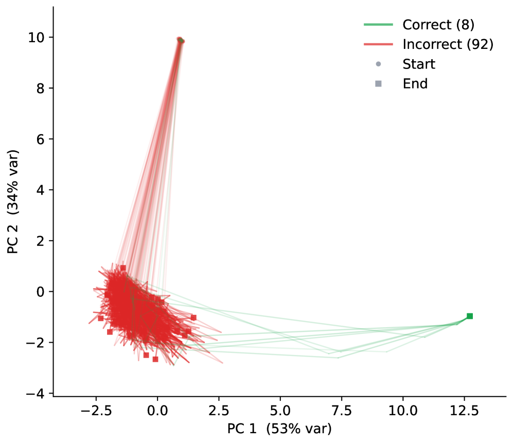
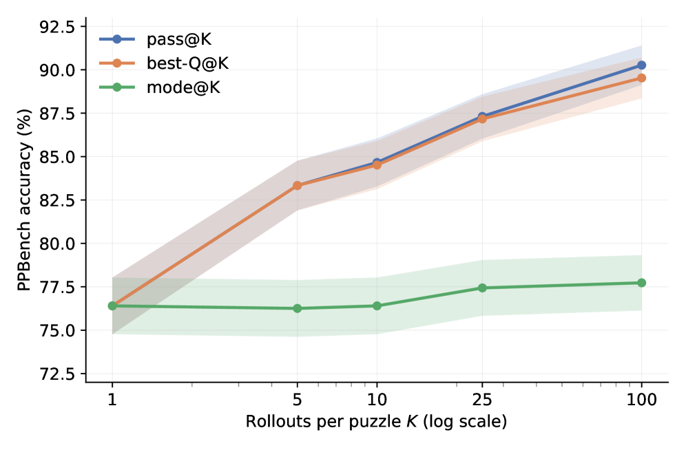

PTRM introduces a task-agnostic test-time compute scaling method that uses stochastic latent trajectories and the model's own Q head to dramatically improve accuracy on reasoning puzzles without retraining.
本文提出了一种任务无关的测试时计算扩展方法PTRM，通过在递归推理的每一步向潜在状态注入高斯噪声，生成多条随机轨迹，并利用模型原有的Q头选择最佳答案。该方法无需重新训练，即可在Sudoku-Extreme和Pencil Puzzle Bench上大幅提升准确率，甚至以极低的成本超越前沿大语言模型。
Deep Note — ptrm
Key Takeaways - PTRM injects Gaussian noise into latent states at each recursion step to enable stochastic exploration without retraining. - PTRM uses the existing Q head (trained for early stopping) to select the best answer among parallel trajectories. - PTRM achieves 98.75% on Sudoku-Extreme (up from 87.4%) and 91.2% on Pencil Puzzle Bench (up from 62.6%). - PTRM outperforms frontier LLMs by 36 points on PPBench at less than 0.0001x the cost using only 7M parameters. - The Q head reliably distinguishes correct from incorrect trajectories, enabling effective answer selection.
0) Metadata
- Title: Probabilistic Tiny Recursive Model
- Alias: ptrm
- Authors: Amin Sghaier, Ali Parviz, Alexia Jolicoeur-Martineau
- arXiv ID: 2605.19943
- Published:
- Links:
- Abs: https://arxiv.org/abs/2605.19943
- HTML: https://arxiv.org/html/2605.19943v1
- PDF: https://arxiv.org/pdf/2605.19943
- Tags: tiny-recursive-model, test-time-compute-scaling, stochastic-exploration, reasoning-puzzles, q-head-selection
- Domains: system_safety
- Rating: 5/5 (base 1 + quality 2 + observation 2)
1) Why-read
PTRM introduces a task-agnostic test-time compute scaling method that uses stochastic latent trajectories and the model's own Q head to dramatically improve accuracy on reasoning puzzles without retraining.
2) CRGP
C — Context
Tiny Recursive Models (TRM) achieve strong reasoning performance with far fewer parameters than LLMs by iteratively refining a latent state. However, their deterministic recursion can trap them in suboptimal latent basins. Prior work used task-specific input perturbations and voting to escape such basins, but this is not general.
R — Related work
- Tiny Recursive Models (TRM) and Hierarchical Reasoning Model (HRM) for recursive latent refinement.
- Test-time compute scaling in LLMs via random sampling and voting/verifier selection.
- Adaptive Computation Time (ACT) for early stopping in recursive models.
- Mechanistic analysis of latent space basins in recursive reasoning models.
G — Gap
TRM's deterministic inference cannot escape bad latent basins, leading to suboptimal solutions. Existing workarounds rely on task-specific input perturbations and voting, which are not generalizable. There is no task-agnostic method to leverage stochastic exploration at test time without retraining.
P — Proposal
PTRM runs K parallel rollouts per input, injecting Gaussian noise into the latent at each recursion step to explore diverse basins. It then selects the answer with the highest Q head logit, which was originally trained for early stopping and reliably indicates trajectory quality. This requires no retraining or task-specific augmentations.
---
4) Experiments
Main results
On Sudoku-Extreme, PTRM improves accuracy from 87.4% to 98.75%. On Pencil Puzzle Bench, accuracy rises from 62.6% to 91.2%, outperforming frontier LLMs (55.1%) by 36 points at less than 0.0001x the cost with only 7M parameters.
Ablation
The Q head selection mechanism is critical: using the Q head to pick among parallel trajectories yields substantially higher accuracy than random selection or majority voting, as the Q head sharply separates correct (sigmoid≈1) from incorrect (sigmoid≈0) trajectories.
Limitations
['PTRM increases inference cost linearly with the number of parallel rollouts K.', 'The method relies on the Q head being well-calibrated, which may not hold for all tasks or training regimes.', 'Gaussian noise injection may not be optimal for all types of latent spaces or reasoning tasks.']
5) Why it matters
- Demonstrates that small recursive models with test-time compute scaling can match or exceed frontier LLMs at a fraction of the cost.
- Shows that a model's own auxiliary head (Q head) can be repurposed for test-time selection without additional training.
- Provides a simple, task-agnostic recipe for improving reasoning accuracy that could be applied to other recursive architectures.
6) Next steps
- [ ] Apply PTRM to other recursive models (e.g., HRM) and domains (e.g., ARC-AGI).
- [ ] Investigate alternative noise distributions or injection schedules for better exploration.
- [ ] Explore combining PTRM with ensemble methods or verifier-based selection for further gains.
- [ ] Analyze the trade-off between number of rollouts K and accuracy improvement to optimize cost-performance.
7) Scoring
5/5 = base 1 + quality 2 + observation 2
Probabilistic Tiny Recursive Model
主要结论 - PTRM在递归每一步向潜在状态注入高斯噪声，实现无需重新训练的随机探索。 - PTRM利用原本用于早停的Q头，从多条并行轨迹中选出最佳答案。 - 在Sudoku-Extreme上准确率从87.4%提升至98.75%，在Pencil Puzzle Bench上从62.6%提升至91.2%。 - 仅用7M参数，PTRM在PPBench上以不到前沿LLM成本0.0001倍的优势，领先36个百分点。 - Q头能可靠区分正确与错误轨迹，从而有效选择答案。
1) 阅读理由
PTRM提出了一种任务无关的测试时计算扩展方法，利用随机潜在轨迹和模型自身的Q头，无需重新训练即可大幅提升推理谜题的准确率。
2) CRGP（背景 / 相关工作 / 差距 / 方案）
上下文：Tiny Recursive Models (TRM) 通过迭代细化潜在状态，以远少于大语言模型的参数实现强推理性能，但其确定性递归可能陷入次优潜在盆地。先前的工作使用任务特定的输入扰动和投票来逃离此类盆地，但缺乏通用性。相关工作：Tiny Recursive Models (TRM) 和 Hierarchical Reasoning Model (HRM) 用于递归潜在细化；大语言模型通过随机采样和投票/验证器选择实现测试时计算扩展；自适应计算时间 (ACT) 用于递归模型的早停；递归推理模型中潜在空间盆地的机制分析。差距：TRM的确定性推理无法逃离不良潜在盆地，导致次优解；现有变通方法依赖任务特定的输入扰动和投票，不可泛化；缺乏一种任务无关的方法在测试时利用随机探索而无需重新训练。提案：PTRM对每个输入运行K条并行轨迹，在递归每一步向潜在状态注入高斯噪声以探索不同盆地，然后选择Q头logit最高的答案——该Q头原本用于早停，能可靠指示轨迹质量。此方法无需重新训练或任务特定的数据增强。
3) 实验
在Sudoku-Extreme上，PTRM将准确率从87.4%提升至98.75%。在Pencil Puzzle Bench上，准确率从62.6%提升至91.2%，以仅7M参数和不到前沿LLM成本0.0001倍的优势，领先其55.1%的准确率36个百分点。
消融实验
Q头选择机制至关重要：使用Q头从并行轨迹中挑选答案，其准确率远高于随机选择或多数投票，因为Q头能清晰区分正确轨迹（sigmoid≈1）和错误轨迹（sigmoid≈0）。
局限性
['PTRM的推理成本随并行轨迹数K线性增加。', '该方法依赖Q头的良好校准，这在某些任务或训练设置下可能不成立。', '高斯噪声注入可能并非对所有类型的潜在空间或推理任务都是最优的。']
4) 重要性
- 证明小型递归模型结合测试时计算扩展，能够以极低的成本匹配或超越前沿大语言模型。
- 展示了模型自身的辅助头（Q头）可以无需额外训练即可用于测试时选择。
- 提供了一种简单、任务无关的推理准确率提升方案，可应用于其他递归架构。
5) 下一步
- [ ] 将PTRM应用于其他递归模型（如HRM）和领域（如ARC-AGI）。
- [ ] 研究替代的噪声分布或注入策略，以改进探索效果。
- [ ] 探索将PTRM与集成方法或基于验证器的选择相结合，以进一步提升性能。
- [ ] 分析轨迹数K与准确率提升之间的权衡，以优化成本-性能比。
![Figure 2: TRM Trajectory Modes. PCA projection of y y (top) and Q value (solid, left axis) with cell accuracy (dashed, right axis) across supervision steps (bottom) for three PPBench puzzles, illustrating three trajectory modes (left to right): quick success, delayed success, and failure (Sec. 3 ).
Latents are projected into the principal plane per puzzle, so PC axes
are not comparable across plots. Trajectories fade from light (early steps) to dark (later steps). Circle marks the start and square
marks end.](figures/1168/fig_001.png)


